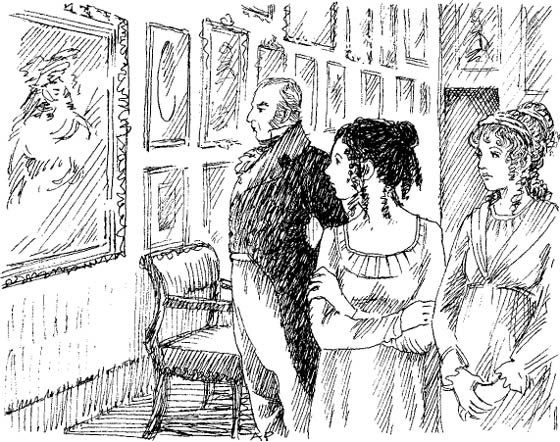
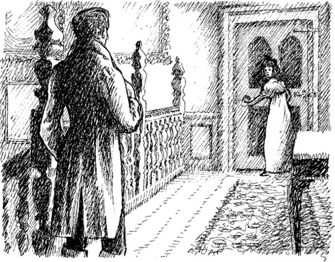

Listen to Part 1:
‘Cô Morland thân mến!’
Henry Tilney trò chuyện với Catherine trong bữa sáng.
‘Đêm qua mưa bão,’ anh nói. Rồi anh mỉm cười. ‘Cô Morland đã ngủ ngon không? Cô có sợ không?’
‘Ồ, không,’ Catherine trả lời nhanh chóng.
‘Hôm nay tôi phải đến Woodston,’ Henry nói. ‘Nhưng em gái tôi sẽ ở đây cùng cô.’
Tướng Tilney luôn đi dạo trong vườn sau bữa sáng. ‘Xin cô hãy đi dạo cùng tôi,’ ông nói với Catherine và Eleanor.
Một số phần của Tu viện Northanger rất cũ. Những phần khác thì hiện đại.
Listen to Part 2:
‘Tôi thích những ngôi nhà cũ,’ Catherine nói. ‘Và những hàng cây cùng những ngọn đồi ở đây thật đẹp!’
Tướng quân rất vui. Ông dẫn Catherine và Eleanor đi quanh các khu vườn. Ông chỉ cho họ xem những loại trái cây và hoa. Eleanor, Catherine và Tướng quân ở trong vườn trong hai tiếng.
Cuối cùng, họ bắt đầu đi bộ trở về nhà. Có một lối đi qua một số cây cao. Eleanor bắt đầu đi về phía lối đi và Catherine đi theo bà.
‘Chúng ta sẽ không đi theo lối đó, Eleanor,’ Tướng quân Tilney nói. ‘Lối đi đó quá ướt.’ Ông quay đi và bước đi.
Hai người phụ nữ trẻ tuổi đi dọc theo lối đi. ‘Mẹ tôi thường đi dạo ở đây,’ Eleanor nói.
‘Nhưng Tướng quân không thích lối đi này,’ Catherine tự nhủ. ‘Tại sao vậy?’
‘Eleanor, có bức tranh nào của mẹ cô trong Tu viện không?’ Catherine hỏi.
‘Có, tôi có một bức trong phòng mình,’ Eleanor đáp. ‘Cha tôi không thích bức đó.’
Catherine không nói gì. Cô đang suy nghĩ. Tướng quân không muốn nhìn thấy bức tranh của vợ mình! Có phải ông đã yêu bà ấy không? Hay ông là một người chồng tồi?
Listen to Part 3:
Buổi chiều, Tướng quân, Eleanor và Catherine đi qua các phòng của Tu viện. Họ đi từ phòng này sang phòng khác. Họ xem qua tất cả các phòng ở tầng dưới. Tướng quân Tilney nói về đồ nội thất, sách và tranh. Anh nói:

Sau đó, Tướng quân, Catherine và Eleanor lên lầu và họ đi qua một số căn phòng khác.
Eleanor đi về phía một cánh cửa cũ.
‘Cô Morland đã xem mọi thứ rồi!’ Tướng quân vội nói. ‘Hãy xuống lầu, cả hai cô bé!’
‘Đó là phòng của mẹ tôi,’ Eleanor khẽ nói.
‘Mẹ cô mất khi nào?’ Catherine hỏi. ‘Cô có ở đó không?’
‘Mẹ mất cách đây chín năm rồi,’ Eleanor đáp. ‘Mẹ mất rất đột ngột. Tôi không có ở đó. Cha tôi thì có.’
Catherine nghĩ về bà Tilney. Có phải Tướng quân đã giết vợ mình? Bà ấy còn sống không? Bà ấy có bị nhốt trong một căn phòng nhỏ, tối tăm? Những điều này chỉ xảy ra trong những câu chuyện kinh dị về các tu viện cổ!
‘Tôi phải xem phòng của bà Tilney,’ Catherine tự nhủ. ‘Đó chính là bí mật của Tu viện Northanger Abbey!’
Listen to Part 4:
Vào thứ Hai buổi chiều, Catherine lên lầu đến phòng ngủ của mình. Cô nhanh chóng chạy đến phòng của bà Tilney. Cô mở cửa và bước vào phòng. Cô rất ngạc nhiên. Cánh cửa thì cũ nhưng căn phòng thì hiện đại. Căn phòng không thuộc phần của tòa nhà cũ. Nó đầy đủ đồ nội thất hiện đại. Catherine bước ra khỏi phòng và đóng cửa lại.
Ngay lúc đó, cô nghe thấy tiếng động. Có người đang đi lên cầu thang. Đó là Henry Tilney.
‘Cô làm gì ở đây?’ Catherine hỏi.
‘Tôi từ Woodston về,’ Henry trả lời. ‘Cô có xem phòng của mẹ tôi không? Eleanor có trò chuyện về bà ấy không?’

‘Có,’ Catherine nói. Cô nói nhanh. ‘Mẹ cô mất rất đột ngột. Bà ấy ở một mình với cha cô. Cha cô không yêu bà ấy. Mẹ cô —?’
‘Cô Morland thân mến,’ Henry nói. ‘Cô đang nói gì vậy? Tôi ở đó. Bác sĩ cũng ở đó. Cha tôi rất đau buồn. Ông ấy yêu mẹ tôi rất nhiều. Cô Morland, cô đã đọc quá nhiều truyện kinh dị rồi!’
Catherine chạy về phòng và khóc.
‘Mình thật ngu ngốc,’ cô tự nhủ. ‘Mình thích Henry. Nhưng anh ấy sẽ không bao giờ thích mình nữa. Mình sẽ không bao giờ đọc truyện kinh dị nữa.’
Listen to Part 5:
Nhưng tối hôm đó, Henry đối xử với Catherine rất tử tế. Ngay sau đó, cô lại vui vẻ trở lại.